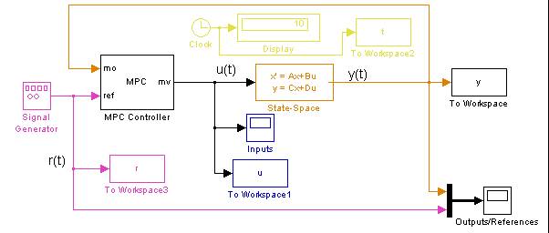
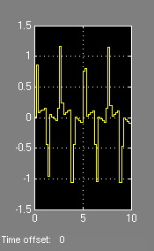
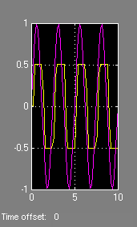
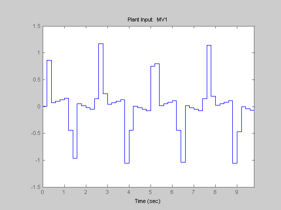
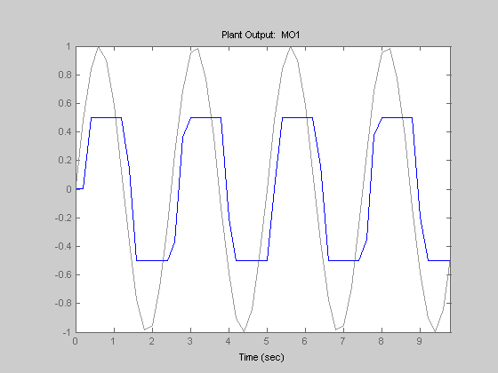

This demonstration shows how to design an MPC controller to control a single-input single-output system tracking of a sinusoid under output constraints.
Author: A. Bemporad
We start defining the plant to be controlled
N1=[3 1]; D1=[1 2*.3 1]; [A,B,C,D]=tf2ss(N1,D1); x0=[0 0]';
Now, setup an MPC controller object
Ts=.2; %Sampling time % Input and output constraints MV=struct('Min',-Inf,'Max',Inf,'RateMin',-20,'RateMax',20); OV=struct('Min',-0.5,'Max',0.5); p=40; m=3; mpccon=mpc(ss(A,B,C,D),Ts,p,m,[],MV,OV);
Simulate using Simulink
Tstop=10; %Simulation time mpc_output_constr sim('mpc_output_constr',Tstop)
manipulated
variable measured output and reference

Simulate using SIM
Tf=round(Tstop/Ts);
close all
sim(mpccon,Tf,r);
